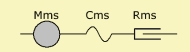

Impedance
This two-pole implements an impedance in the network, where the value is specified by a formula-system. The Impedance element can be an electrical, mechanical or acoustical element. Parameters
The impedance is specified in form of a run-time formula which can be entered at parameter Formula. Note, that in this case the result of the last formula forms the impedance. Run-time variables are :
Examples1) Example In this example Impedance models a resonator of the mechanic-impedance network. Mms, Cms and Rms are specified here as global constants. The formula-term (1 + ω/ω0) makes the mass of the vibrating assembly frequency dependent. 'j' is the imaginary unit. The result of the last formula is assigned to the component. The last identifier 'Zms' could also be omitted.Global formula are not run-time formula. However, results can be accessed.
Mms = 1e-3; // Mechanical mass [kg]
Rms = 1; // Mechanical resistance [Ns/m]
Cms = 70e-6; // Mechanical compliance [N/m]
...
Parameter Formula has following formula system, where operator "@" means that we access results of the global formula section:
wo = 2*pi*5000;
// w is run-time variable. Zms is last formula and yields the impedance.
Zms = @Rms + j*w*@Mms/(1 + w/wo) + 1/(j*w*@Cms)
2) ExampleThe effect of viscosity and thermal exchange in a duct yields a frequency
dependent resistance:
WD=10e-2; // Width of duct
HD=1e-2; // Height of duct
L=30e-2; // Length of duct
rho=1.189; // Density of air
c=343; // Velocity of sound in air
nue=18.2e-6; // Dyn. viscosity
gamma=1.402; // Specific heat of air @ 20° and 101kPa
dvo=sqrt(nue/(rho*pi)); // Viscosity boundary layer factor
dho=sqrt(5*nue/(3*gamma*rho*pi)); // Thermal boundary layer factor
D=2*(WD + HD); // Perimeter
S=WD*HD; // Area
k=w/c; // Wave-number
// Last formula is assigned to the impedance of the component
Ra=rho*c*D*L/(2*sqr(S))*k/sqrt(f)*(dvo + (gamma-1)*dho);
|